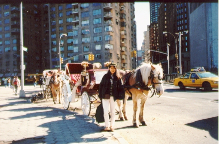

ニューヨーク (96.3)
Columbus Circle (Broadway) の前で

|
今までのものを自分で読み直してみたら長くて読みにくかったので、これからはもう少し簡潔に書きます。どうして私の言葉ってこんなに長いんだろう？(^^; 私は”場所”に慣れるのは一苦労するタイプのようです。他の人に比べると、土地勘が少ないのと、外へ出るのがあまり好きじゃないせいかもしれません。こっちに来た時も自分からニューヨークへ行きたいと思ったことはなく、誰かに誘われてやっと腰をあげる、という感じでした。ただ好きな場所には飛んでいきます(^-^)。私は歴史のあるところが好きなのです。ニューヨークは「歴史」というよりも「芸術」という感じで私にとってはいまいち魅力はありません。買い物も嫌いだし。(^^; でもニューヨーク・シティで一つだけ好きなところがあります。それは美術館！特にＭｏＭＡと呼ばれている「現代美術館」は大好きで、誰かと待ち合わせる時（日本から出張で来られる方々、、お寿司を食べさせてもらうのが好き(*^^*)）には、必ず早めに行ってここで時間をつぶします。でももう半年、行ってないなぁ。。 そういうわけで、私はニューヨーク州に住んでると言ってもマンハッタンのことは全然知らないのです。そんな私を見て、ハウスメートのキティはいろんなところに私を誘ってくれます。（と言うより、彼女はあちこち行くのが好きなのでしょう(^-^)。）そして私がニューヨークを観光したことがないと知って、３日間、つきっきりでマンハッタンを案内してくれました。おかげでここに来て２年後、初めて旅行者の行くようなところに行くことができました。自由の女神、エリス島、サウス・ストリート・シーポート、ウォール街、ソーホー、チャイナタウン、タイムズ・スクエア、リンカーンセンター、五番街。。。 この写真はセントラル・パークの周りをぐるっと歩いている馬と撮ったものです。馬はきょろきょろしているので、こっちをむいている時に撮りたくて「今撮って！」と叫んでいるのですが、ちょうど前をむいてしまったみたいです(^^；。セントラルパークの周りはこのような馬（馬車）がたくさん道を歩いています。一度、結婚式を終えたらしきカップルが乗っているのをみたこともあります(*^^*)。 コロンバス・サークルと言うのは、８番街西５９丁目にあり、ブロードウェイ（劇場が並んでる通り）とも交差しています。ニューヨークの真ん中にあるセントラルパークの一番下に位置します。この辺には有名人が来ると言われている、ハードロック・カフェやプラネット・ハリウッド（私は入ったことはありませんが）などもあります。 |

=ニューヨーク Columbus Circle の前で(96.3)=
[ホームへ] [写真一覧へ]